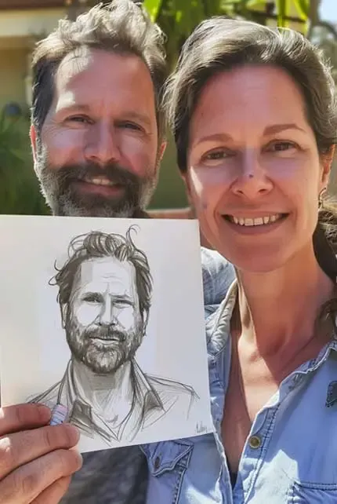
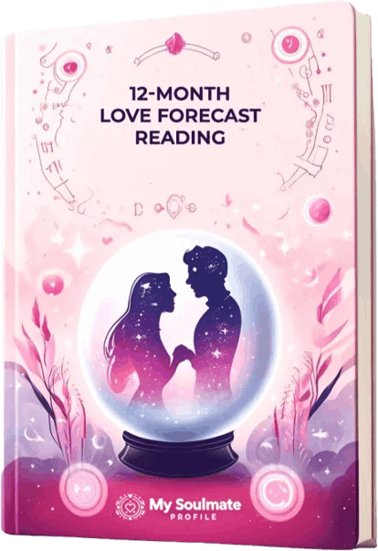
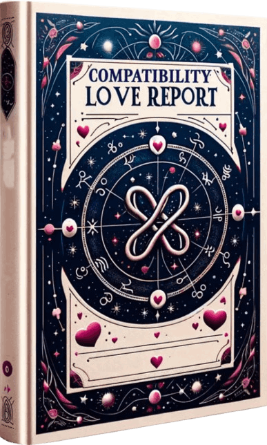

According to its creator, Tara Lunar Soulmate Sketch™ has already helped thousands of people gain deeper insight and renewed confidence in their romantic lives. Instead of relying on traditional dating apps or endless swiping, this service offers a more thoughtful and imaginative approach to discovering meaningful connections.
Getting started is easy. You simply provide a few personal details about yourself, and an intuitive team uses this information to create a personalized vision of the type of partner you are naturally aligned with. The experience is crafted to feel unique, uplifting, and emotionally meaningful—giving you a fresh perspective on love and relationships.
In this review, we’ll take a closer look at how My Soulmate Profile™ works, the features it includes, and whether it might be the right option for those seeking a more creative and heartfelt path to finding connection. We’ll also explore user feedback and key insights to help you decide if this personalized experience is a valuable step toward discovering your ideal match.
"When I received my sketch, I felt an instant sense of peace—like something just clicked inside me. I’ve always believed that certain people are meant to meet, but actually seeing a visual representation made it feel so much more real. The intuitive insights that came with it gave me clarity and helped me trust my heart again."
"I was honestly doubtful in the beginning. I didn’t expect much. But when I opened the sketch, I got goosebumps. It reminded me so strongly of someone I met while traveling abroad a couple of years ago. The resemblance was surprising, and now I keep wondering if our paths might cross again. It’s a strange feeling, but also very comforting."
"My friends laughed when I told them I ordered a soulmate sketch—until they saw it. One of them immediately recognized the similarities to someone I had dated before. We compared photos, and the likeness was incredible. It gave me the confidence to reconnect, and I’m so glad I did."
Tara Lunar Soulmate Sketch™ is a unique digital experience designed to help you explore the deeper possibilities of your romantic future. Instead of relying on conventional dating apps or endless scrolling, it offers a more intuitive and meaningful way to reflect on the kind of partner you may be naturally aligned with.
By combining elements of astrology, spiritual insight, and modern digital artistry, the program creates a personalized glimpse into your potential soulmate’s energy and character. You receive a custom facial sketch along with a voice-based profile, both thoughtfully designed to capture the personality, presence, and emotional qualities of your ideal match.
The experience is guided by Master Tara Winslow, an experienced astrologer and spiritual mentor with decades of practice. Using principles inspired by Eastern astrology and detailed birth chart analysis, she and her team develop what they call a unique “soulprint”—a symbolic blueprint that represents the energetic connection between you and your destined partner.
Through this highly tailored process, My Soulmate Profile™ aims to provide clarity, inspiration, and a sense of wonder, helping you approach love with renewed confidence and an open heart.

How Does Tara Lunar Soulmate Sketch™ Work?

This customized astrological forecast provides a month-by-month outlook on your romantic life for the year ahead. Based on your Eastern birth chart and planetary influences, it highlights the most favorable periods for attraction, connection, and emotional growth.
By understanding when the timing is right, you can focus your efforts wisely—whether that means meeting new people, strengthening a current relationship, or opening your heart to fresh opportunities. It’s like having a cosmic roadmap to guide your love life.
Regular Price: $50
Today’s Price: FREE

The Love Compatibility Report gives you deeper insight into how your energy aligns with your potential soulmate. Using zodiac traits and astrological patterns, it explores emotional harmony, relationship strengths, and possible challenges you may face together.
You’ll also receive practical tips on communication, balance, and connection, helping you build a stronger and more lasting bond when you meet the right person.
Regular Price: $42
Today’s Price: FREE
Inspiring Visualization
The personalized soulmate sketch and custom voice profile create a vivid picture of your potential partner. This visual and emotional representation can make the experience feel more real, helping you build excitement and hope about your romantic future.
Astrological Guidance
With tools like the 12-month love forecast and zodiac compatibility insights, the program offers a structured, astrology-based roadmap. These features help you identify promising periods for romance and approach relationships with greater awareness and intention.
Emotional Uplift
The spiritual and reflective nature of the program encourages a positive mindset. Many users report feeling more confident, open-hearted, and optimistic about love after engaging with the experience.
Practical Manifestation Tools
Extras such as the Divine Love Calendar, affirmations, and follow-up guidance provide simple actions you can take to stay focused on your goals. These tools help you actively participate in your love journey rather than waiting passively.
Unique Spiritual Experience
By blending astrology, intuition, and creative artistry, My Soulmate Profile™ offers something different from typical dating apps. It appeals especially to those who enjoy a mystical or spiritually inspired approach to relationships.
Lack of Scientific Validation
The program relies on astrology and psychic interpretation, which are not supported by scientific research. For those seeking evidence-based relationship advice, the claims may feel unconvincing.
Potentially Generalized Results
Some users mention that certain descriptions or insights feel broad or similar to others, which can reduce the sense of deep personalization.
Trying Tara Lunar Soulmate Sketch™ is completely risk-free. Your purchase is protected by a full 60-day money-back guarantee, giving you plenty of time to explore your personalized sketch, voice profile, and love insights with total peace of mind.
If for any reason you’re not satisfied with your experience, you can request a full refund within 60 days of your purchase. There are no complicated steps and no pressure—just reach out to the friendly, US-based customer support team, return your product, and your refund will be processed promptly, typically within 48 hours.
This simple, hassle-free guarantee means you can try My Soulmate Profile™ with confidence, knowing you have absolutely nothing to lose.
Many soulmate sketch services provide generic drawings or rely on broad astrological ideas that feel impersonal.
Tara Lunar Soulmate Sketch™ takes a more detailed and individualized approach. It uses principles inspired by Eastern astrology along with your specific birth information to create a profile tailored to your unique energy and personality. Rather than a random illustration, the sketch and insights are designed to symbolically reflect the type of partner you may naturally align with.
The result is a more personal and meaningful experience that goes beyond surface-level predictions.
Your profile is developed using the personal details you provide, such as your birth date and other key information. These details are interpreted through astrological analysis and intuitive insight to form a unique energetic “blueprint.”
Based on this interpretation, artists and readers create your custom soulmate sketch, voice profile, and supporting materials. The goal is to deliver an experience that feels personal, uplifting, and emotionally engaging.
Your purchase is protected by a risk-free money-back guarantee. If your profile doesn’t meet your expectations or simply doesn’t resonate with you, you can request a full refund within the guarantee period.
There are no complicated steps or pressure—just contact customer support and your refund will be processed quickly. This allows you to try the service with complete confidence.
Because each profile is created specifically for you, delivery is not instant. After placing your order, your request is processed right away, and most profiles are completed and delivered within 24 hours via email or a secure online portal.
This careful creation process ensures your experience feels thoughtful and personalized.
You can expect a custom soulmate sketch, personalized insights, and astrological guidance designed to inspire reflection and optimism about your love life. The experience is meant to feel engaging, symbolic, and motivational rather than purely predictive.
Many users treat it as a tool for clarity, intention, and emotional growth as they move forward in their romantic journey.
Your privacy and payment security are a top priority. All transactions for Tara Lunar Soulmate Sketch™ are handled through ClickBank, a well-established and trusted online payment processor with years of experience managing secure digital purchases.
ClickBank uses advanced encryption and industry-standard security measures to protect your credit card information and personal details throughout the checkout process. This means your sensitive data is never exposed or stored insecurely.
You can complete your purchase with confidence, knowing your information is safe and fully protected.
Your satisfaction matters. That’s why Tara Lunar Soulmate Sketch™ is backed by a 60-day, 100% money-back guarantee.
If for any reason you’re not happy with your experience, you can request a full refund within 60 days of your purchase—no questions asked and no hassle.
Simply reach out to customer support, and they’ll assist you promptly.
📧 Customer Support Email: support@mysoulmateprofile.com
This risk-free policy ensures you can try Tara Lunar Soulmate Sketch™ with complete peace of mind.